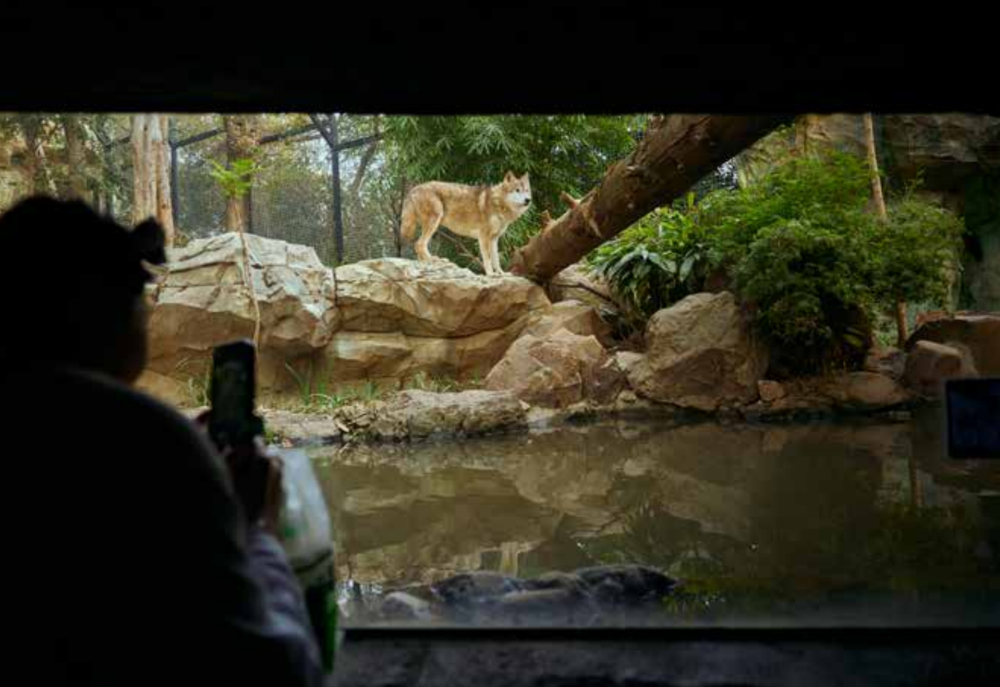

At Hongshan Forest Zoo, design is no longer about displaying animals, but about changing how humans see, approach, and coexist with them.

This reported feature examines how Hongshan Forest Zoo rethinks enclosure design by starting from animals’ sensory worlds rather than human expectations. Through on-site observation and interviews with designers, the piece explores how spatial design reshapes power, distance, and coexistence between humans and animals.
Excerpt 1: Seeing from the Wolf’s Position
When designing the wolf enclosure, the team began with the animal itself. Wolves cannot climb trees, prefer terrain with elevation changes, and live in strictly hierarchical social structures.
The final visitor route resembles a taiji-like curve. Visitors start from a lower point, slowly rise, and then descend again. At certain moments, they look up at the wolves rather than down at them.
Changing the visitor’s height, designer Huang Yan explained, also changes the psychological relationship between humans and animals.
Excerpt 2: Designed, Yet Natural
What looks natural is often carefully designed. In the wolf enclosure, resources such as resting spots, water, and lookout points are deliberately scattered rather than concentrated.
Each resource point is paired with a viewing surface, allowing visitors to observe different animal behaviors without forcing animals into performance.
These subtle arrangements allow wolves to drink, rest, patrol, and interact as they would in the wild.
Excerpt 3: Against Human-Centered Design
“The greatest enemy of zoo design,” Huang Yan said, “is human-centered thinking.”
Designers often project human comfort onto animals, only to create environments that cause stress or harm.
Good zoo design begins by abandoning human assumptions and learning to think like the animal itself.